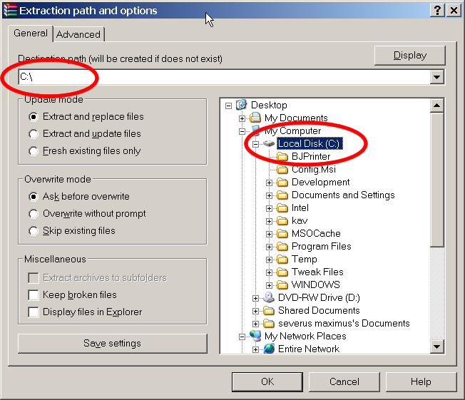

This document aims to provide a step-by-step guide for installing the Epsilon Development Tools (EDT).
In this section, prerequisites for the function of EOL are identified and instructions are provided on how to acquire and install these resources.
The last release of Epsilon DT have been developed using Java 5.0 and will not work with earlier versions of Java (e.g. 1.3.x, 1.4.x) . The latest JRE is available at the Java Official Website.. Before installing it, read the installation notes and the system requirements. The provided installation instructions are available for the following platforms:
The next step will be to install the Eclipse platform and the EMF plug-ins.
The Epsilon DT have been tested against Eclipse 3.1 and 3.1.x under Java 5.0. They should also work with Eclipse 3.2. However, they have not been tested yet under this version of Eclipse. Eclipse can be downloaded from here. Select one of the releases of Eclipse SDK 3.1, 3.1.x or higher. The downloaded file should have a name similar to “eclipse-SDK-3.1-win32.zip” or “eclipse-SDK-3.1-linux-motif.tar.gz” or some other name depending on the operating and windowing system, which is used. For each release of Eclipse, a page identifies the downloads that are available. The source code for the release is available at the end of the list.
Important Note: In the sequel, the procedure described applies only to the Windows platform. However, this procedure is similar to the procedures followed to install the Eclipse Environment to other platforms as well.
To install the Eclipse environment decompress the archive downloaded. This can be done with any standard decompression software. The archive should be decompressed into the folder from where Eclipse will run.For example. “C:\''.
This will create an eclipse directory, which will contain all the Eclipse files. The Eclipse executable will be located into this install directory.
(To unistall Eclipse all that needs to be done is to delete the installation directory and its contents)
The EMF framework is available at the Eclipse website. Download the latest version of EMF. Then use a standard decompression tool, to decompress the EMF plug-in archive into a directory of your choice. For example, into C:\emf.
A sub-directory in this directory will be called plugins. Cut the contents of this subdirectory and past them into the Eclipse installation plug-ins directory. For the above example used in the installation instructions for the Eclipse Environment, this directory would be C:\eclipse\plugins.
The temporary directory, in which the contents of the EMF archive were extracted can now be deleted.
The Kernel MetaMetaModel or else KM3 is a convenience notation defined by the ATLAS team to facilitate and speed up the creation and management of metamodels.. KM3 abstract syntax (metamodel) is based on Ecore and eMOF 2.0. KM3 is part of the Atlas Transformation Language(ATL), which is implemented as an Eclipse plug-in. ATL can be found at the ATL project website. Instructions on how to install and use the ATL and KM3 are available here.
Next | Last